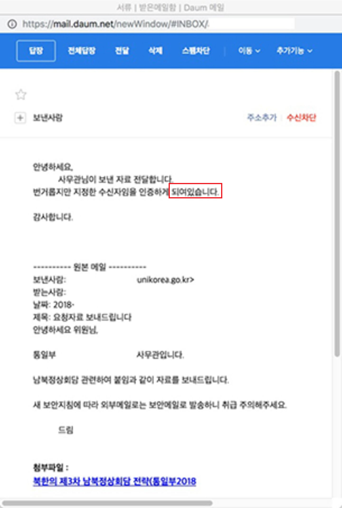
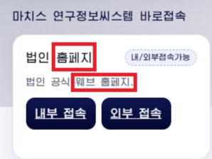

Linguistic Indicators in Malware Analysis
When attributing malware to a specific threat actor or nation-state, analysts rely on far more than malware functionality or infrastructure. One often overlooked but valuable source of evidence is linguistic indicators.
Linguistic indicators are language-related artifacts left behind during malware development. These artifacts are usually unintentional and can reveal clues about a developer's native language, writing habits, or cultural background.
Common examples include:
- Error messages and UI strings
- Source code comments
- Variable and function names
- Debug strings
- PDB paths
- Spelling and grammar
- Foreign word transliterations
- Date and time formats
For example, Russian malware has been found containing Russian comments, Chinese malware often includes Chinese comments or Pinyin variable names, and several North Korean malware families have contained vocabulary and spelling consistent with North Korean Korean.
Differences Between South Korean and North Korean Korean
Although South Korea and North Korea share the same language, their official writing systems have evolved differently over the past several decades. These differences can sometimes appear in malware samples developed by North Korean threat actors.
Initial Sound Rule
One of the most noticeable differences is the Initial Sound Rule.
South Korean orthography applies this rule, changing certain initial consonants to make pronunciation more natural.
North Korean Korean generally does not apply the Initial Sound Rule, preserving the original spelling.
Loanwords
Another distinguishing feature is the treatment of loanwords.
South Korean Korean readily adopts foreign loanwords, particularly from English.
North Korean Korean, on the other hand, discourages the adoption of foreign loanwords and instead prefers native Korean expressions or alternative transliterations.
Because of these linguistic differences, malware developed in North Korea has occasionally contained expressions, providing analysts with useful attribution clues.
Real-World Examples of Linguistic Indicators in Malware
The following table summarizes the linguistic indicators that have been identified in North Korean malware to date. Each indicator is then discussed in detail with corresponding real-world examples.
| North korean | South Korean | |
|---|---|---|
| computer | 콤퓨터 | 컴퓨터 |
| file | 화일 | 파일 |
| program | 프로그람 | 프로그램 |
| error | 오유 | 오류 |
| completed | 되였습니다 | 되었습니다 |
| theoretical | 리론적 | 이론적 |
| year-end | 년말 | 연말 |
| as above | 우와 같은 | 위와 같은 |
| page | 페지 | 페이지 |
| web home page | 웨브홈페지 | 웹사이트 |
| web browser | 내나라열람기 | 웹브라우저 |
| exception | 레외 | 예외 |
| unknown | 알수 없습니다 | 알 수 없습니다 |
| SSL certificate | 보안증명서 | 보안 인증서 / SSL 인증서 |
| CA (Certificate Authority) | 발급자증명서 | 인증기관 / CA |
| Button | 단추 | 버튼 |
| File explorer | 파일열람기 | 파일탐색기 |
| User | 리용자 | 사용자 |
| Recycle Bin | 회수통 | 휴지통 |
Case 1: Linguistic Indicators in Initial Access
North Korean threat actors often initiate attacks by sending spear-phishing emails or approaching targets through social networking platforms such as Facebook and Telegram, waiting for victims to engage with their lures. During this social engineering process, they frequently attempt to establish trust by engaging in conversations with their targets. In some documented cases, these communications have contained awkward expressions or North Korean linguistic features that are uncommon in South Korean Korean, providing analysts with additional linguistic indicators.
{kind=link}



Furthermore, North Korean linguistic expressions often appear unnatural to native South Korean speakers. As a result, these linguistic artifacts may reveal the attackers' origin and, in some documented cases, contribute to the failure of their initial access attempts.
Case 2: Linguistic Indicators in the Malware
Linguistic Indicators can be found not only within malware developed by North Korean threat actors, but also in the decoy documents used during their campaigns.


Case 3: Linguistic Indicators in North korean Website
North Korean linguistic features appear much more frequently on North Korean websites and in North Korean software, such as Red Star OS. Studying these sources helps analysts become familiar with North Korean vocabulary, spelling, and writing conventions, making it easier to recognize suspicious linguistic patterns in phishing emails and other social engineering content.


{kind=link}



Why Do North Korean Threat Actors Leave Linguistic Indicators Behind?
There is no definitive public evidence that answers this question. However, based on publicly available reporting and my own observations, I believe there are two plausible explanations.
1. Functional Specialization Within North Korean Cyber Operations
Modern APT groups are highly organized, and North Korean cyber operations are also believed to be divided into specialized teams responsible for different stages of an attack, such as malware development, social engineering, infrastructure management, and operational support.
As a result, the developers responsible for writing malware may not be the same individuals who prepare phishing emails or decoy documents. Likewise, the people conducting the operation may not thoroughly review every linguistic detail before deployment. In such an environment, seemingly minor linguistic artifacts can easily be overlooked.
2. APT Groups Are Still Built by Humans
Despite their sophistication, APT groups are ultimately operated by people. Human error is inevitable.
Over the years, security researchers have discovered numerous operational mistakes made by threat actors, including exposed PDB paths, debug strings, developer usernames, compilation metadata, and other development artifacts. Linguistic indicators can be viewed in the same way—as another type of operational oversight.
Completely eliminating one's native language habits is difficult, especially when preparing large volumes of phishing emails, malware resources, and decoy documents under operational constraints. Consequently, traces of North Korean spelling, vocabulary, or writing conventions may occasionally remain within malware campaigns.
Looking ahead, I expect these linguistic indicators to become increasingly rare as AI-powered writing and translation tools continue to improve. Threat actors can already leverage large language models to proofread phishing emails, localize decoy documents, and produce more natural, native-level text.
Linguistic Indicators Are Only One Piece of the Puzzle
While linguistic indicators can provide valuable clues, they are never sufficient on their own to attribute an attack. Threat actors may intentionally insert misleading language to create a false flag, reuse publicly available code, or simply write in a language that is not their native one.
For this reason, professional CTI investigations correlate linguistic evidence with multiple independent sources, including:
- Linguistic patterns (spelling, comments, variable names, strings)
- Compilation timestamps and working-hour patterns
- PDB paths and development environment artifacts
- Code reuse and function similarity
- C2 infrastructure and domain registration data
- Encryption methods and loader architecture
- MITRE ATT&CK TTPs
- Links to previous campaigns
Only when these technical and operational indicators consistently point toward the same actor can analysts make a high-confidence attribution.
References
 https://asec.ahnlab.com/ko/54473/
https://asec.ahnlab.com/ko/54473/
 https://www.ahnlab.com/ko/contents/content-center/31890
https://www.ahnlab.com/ko/contents/content-center/31890

-3.png)
 https://www.yna.co.kr/view/AKR20160215090853004
https://www.yna.co.kr/view/AKR20160215090853004